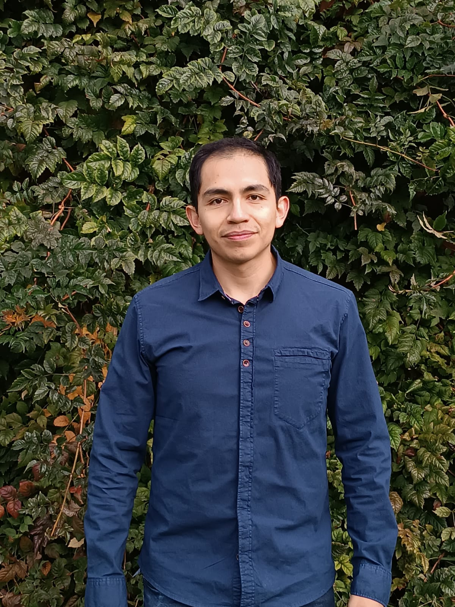

Carlos Medina | WDD 130
Hi there!, it is Carlos. I am from Tarija, Bolivia. I enjoy working out, sharing time with friends and family and learning skills. I am 30 years old. I am a chemical engineer and currently I work for a water, soil, and food testing laboratory. I have been working on that lab for 3 years now. I have learned a lot and helped the lab to reach accreditation under global standards by implementing and maintaining a quality control system, to implement new equipments and testing methods. I am working on some personal projects and getting online education to support those projects.